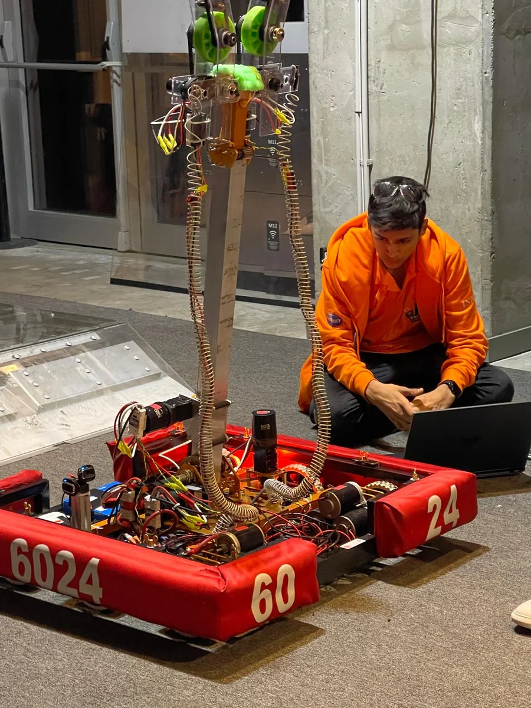
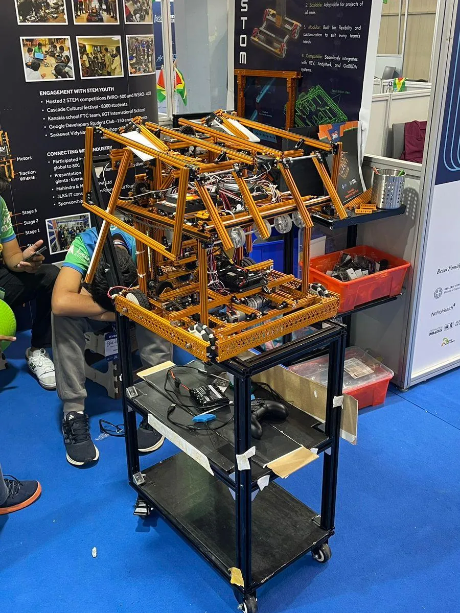
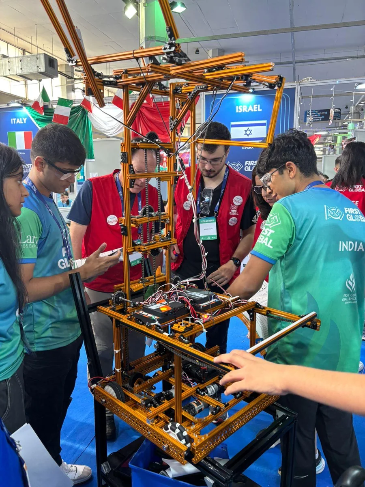

Robotics competitions
Robot Arm and Elevator Subsystems
Mechanical subsystem design from nearly five years in robotics competitions, including captaining an FRC team and Team India at the FIRST Global Challenge.

- Role
- Team Captain and Programming Lead
- Dates
- June 2020–April 2025
- Teams
- FRC 6024 RFactor (2021–2023), FRC 7539 Elev8 (2024), FIRST Global Challenge Team India (2024)
Contribution
What I worked on
The robots were team efforts. My part was leading robot arm and elevator subsystem design, designing the cascading elevator, PID-tuning shooter controls, and mentoring new members in SolidWorks and machining.
FRC 2023
Team 6024 RFactor, 2021–2023
I was on Team 6024 RFactor from 2021 to 2023 and captained it in the 2023 FRC season. Fig. 3 shows the robot practicing its autonomous routine for the self-balancing task. I wrote the balancing code with one other teammate.

FIRST Global Challenge 2024
Cascading elevator
I captained Team India at the 2024 FIRST Global Challenge. The robot had to carry four 27.5 cm balls around the field and drop them into the nexus goals: open-topped bins with their rims 120 cm off the ground. It also had to start the match inside a 50 × 50 × 50 cm cube.
That meant lifting balls well over twice the robot’s starting height. I designed a cascading elevator for it: its stages nest inside the starting cube and extend in sequence to reach the goals (Fig. 5). It won our team the Zhang Heng Bronze Award for Engineering Design.


Outcome
Recognition and team results
Team awards, by season:
- 2021 · FRC 6024 RFactor
- Chairman’s Award Finalist among 3,079 teams, runner-up for the FIRST Hall of Fame. The robot game was cancelled that season because of COVID-19.
- 2022 · FRC 6024 RFactor
- Engineering Inspiration Award, qualifying the team for the World Championship.
- 2023 · FRC 6024 RFactor, as captain
- Engineering Inspiration Award, qualifying the team for the World Championship, and the Creativity Award for creative electrical packaging.
- 2024 · FIRST Global Challenge, Team India, as captain
- Zhang Heng Bronze Award for Engineering Design, for the cascading elevator. The team finished 4th of 193.